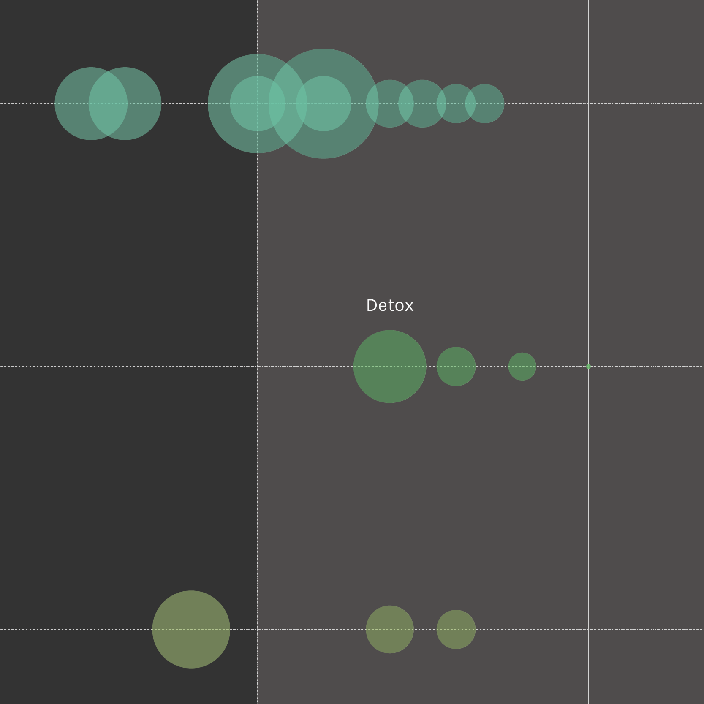
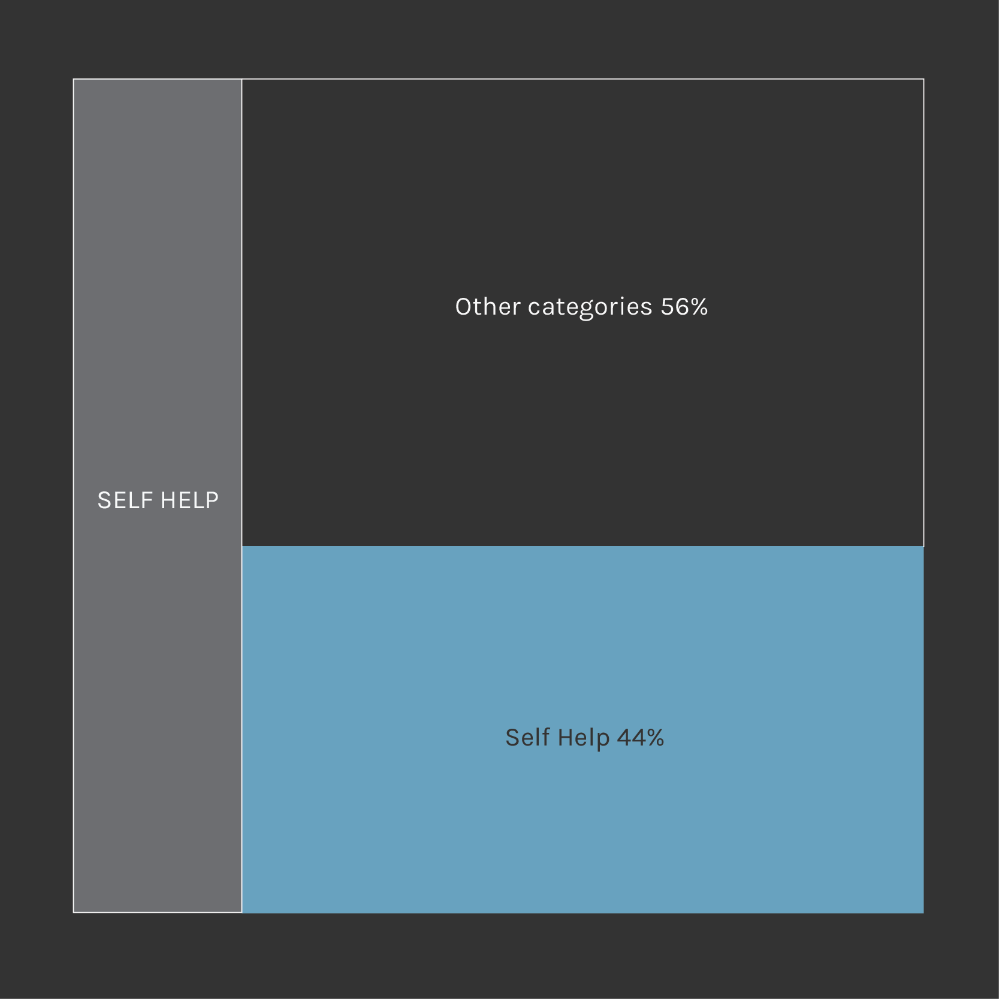
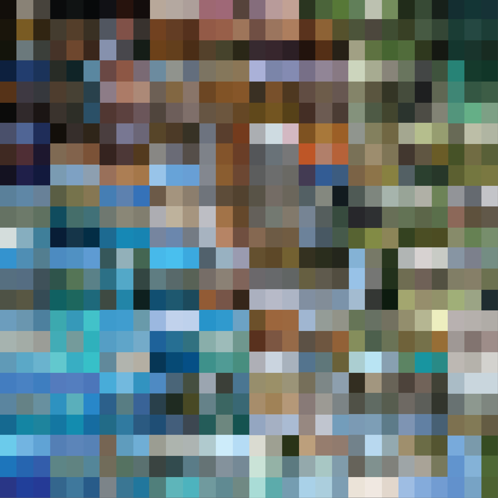

When we talk about addictions caused by the Internet and generally technology overuse, we are dealing with a huge topic. It goes from all the psychological mental diseases, which sometimes turn into a maniacal overuse, taking over people’s everyday life; to habits representing the Zeitgeist, such as the impossibility to be cut off Facebook for more than ten minutes. There are rehabilitation clinics to detoxicate from the excessive online gaming, widespread phenomenons related to the digital addiction, company which block the Internet to make their workers produce more and better, apps that limitate the smartphone use and lots of do it yourself detox remedies. Everyone talks about it, but none seems to be fully aware of the theme in all its aspects and complexity. Throughout our research, we tried to create a clear and complete mapping of the phenomenon, aiming to understand what people think about it and how they interact with it. We analysed its network, going thought a qualitative and quantitative research of Google results, reviewing Amazon books and discovering a lot more about detoxication remedies.
By Nicolò Arena, Claudio Fabbro, Alessandro Malcotti, Marta Mandile, Anita Righetto
Digital situations call for
extreme measures
"So many people now don't understand their relationship with technology,
but they do know something's wrong with how often they feel the need to check their phone."
chapters

Corpus Analysis
Quantitative and qualitative analysis of Google's texts and images corpus.


Digital Detox
A mapping of tech-free destinations all around the world.
Faculty
- Paolo Ciuccarelli
- Marco Fattore
- Stefano Mandato
- Donato Ricci
- Salvatore Zingale
Teaching Assistants
- Matteo Azzi
- Daniele Ciminieri
- Michele Mauri
- Azzurra Pini
- Giorgio Uboldi